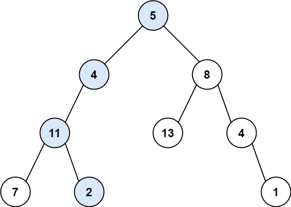
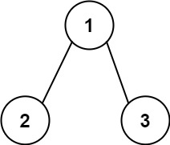

路径总和
题目
给你二叉树的根节点 root 和一个表示目标和的整数 targetSum 。判断该树中是否存在 根节点到叶子节点 的路径，这条路径上所有节点值相加等于目标和 targetSum 。如果存在，返回 true ；否则，返回 false 。
叶子节点 是指没有子节点的节点。
示例 1：

输入： root = [5,4,8,11,null,13,4,7,2,null,null,null,1], targetSum = 22
输出： true
解释： 等于目标和的根节点到叶节点路径如上图所示。
示例 2：

输入： root = [1,2,3], targetSum = 5
输出： false
解释： 树中存在两条根节点到叶子节点的路径：
(1 --> 2): 和为 3
(1 --> 3): 和为 4不存在 sum = 5 的根节点到叶子节点的路径。
示例 3：
输入： root = [], targetSum = 0
输出： false
解释： 由于树是空的，所以不存在根节点到叶子节点的路径。
提示：
- 树中节点的数目在范围
[0, 5000]内 -1000 <= Node.val <= 1000-1000 <= targetSum <= 1000
/**
* Definition for a binary tree node.
* function TreeNode(val, left, right) {
* this.val = (val===undefined ? 0 : val)
* this.left = (left===undefined ? null : left)
* this.right = (right===undefined ? null : right)
* }
*/
/**
* @param {TreeNode} root
* @param {number} targetSum
* @return {boolean}
*/
var hasPathSum = function(root, targetSum) {
};参考答案
方法一：DFS（递归）
思路：<br>将问题转化为，当前节点的子节点到叶子节点的路径和是否等于targetSum - root.val。递归遍历到叶子节点为止。<br>递归分析
- 终止条件：当前节点为null，返回false；当前节点为叶子节点，判断sum是否等于val
- 递归推进：递归判断左右子节点，返回结果
代码
/**
* Definition for a binary tree node.
* function TreeNode(val, left, right) {
* this.val = (val===undefined ? 0 : val)
* this.left = (left===undefined ? null : left)
* this.right = (right===undefined ? null : right)
* }
*/
/**
* @param {TreeNode} root
* @param {number} targetSum
* @return {boolean}
*/
var hasPathSum = function (root, targetSum) {
if (!root) {
return false;
}
if (!root.left && !root.right) {
return root.val === targetSum;
}
return hasPathSum(root.left, targetSum - root.val) || hasPathSum(root.right, targetSum - root.val);
};时间复杂度O(N)：其中 N 是树的节点数。对每个节点访问一次。
空间复杂度O(H)：其中 HH 是树的高度。空间复杂度主要取决于递归时栈空间的开销，最坏情况下，树呈现链状，空间复杂度为 O(N)。平均情况下树的高度与节点数的对数正相关，空间复杂度为 O(logN)。
方法二：BFS（队列或栈）
思路：<br>进行广度优先遍历，使用两个队列，一个队列用于保存节点，一个队列用于保存对应节点到根节点的路径和。如果当前节点是叶子节点，则判断路径和是否等于sum。（使用栈也一样，只不过顺序不同而已，队列先遍历左子树，栈先遍历右子树）
代码：
var hasPathSum = function(root, targetSum) {
if(root == null){
return false;
}
var queue1 = [root];
var queue2 = [root.val];
while(queue1.length !== 0){
var node = queue1.shift();
var rootVal = queue2.shift();
if(node.left == null && node.right == null && rootVal == targetSum){
return true;
}
if(node.left){
queue1.push(node.left);
queue2.push(node.left.val + rootVal);
}
if(node.right){
queue1.push(node.right);
queue2.push(node.right.val + rootVal);
}
}
return false;
};时间复杂度O(N)：其中 N 是树的节点数。对每个节点访问一次。
空间复杂度O(N)：其中 N 是树的节点数。空间复杂度主要取决于队列的开销，队列中的元素个数不会超过树的节点数。